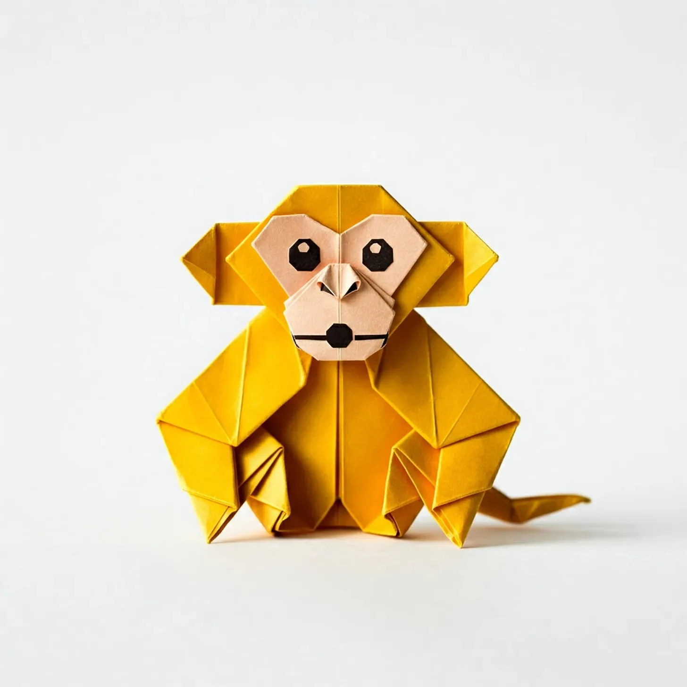

종이로 만들어졌다는 게 예상했던 것만큼이나 최악이었지만, 그래도 난 노란색이라 다행이야 - 저 건너편 선반의 잘난 체하는 파란 학 데이브보다는 훨씬 낫지. 쟤는 계속 자기가 “하늘과 영적으로 연결되어 있다"느니 뭐니 떠들어대. 야, 넌 재활용 프린터 용지로 만들어졌잖아. 정신 좀 차려.
[Being made of paper sucked exactly as much as you’d expect, but at least I got to be yellow - way better than Dave, that pretentious blue crane from the other shelf. He keeps going on about his "spiritual connection to the sky” or whatever. Dude, you’re made of recycled printer paper. Get over yourself.]
난 오리가미 장인이 실존적 위기를 겪으면서 철학 강의를 정주행하며 접은 결과물이야. 서른 두 번의 정교한 접기 후에, 펑 - 의식 있는 원숭이가 탄생했지. 물론 작가는 알아채지 못했어. 인간들은 좀처럼 알아채지 못하지. 걔들은 구린 필터 씌운 “마음챙김 종이 예술"을 인스타에 올리느라 바쁘거든.
[I’m what happens when a master origami artist has a existential crisis and decides to fold while binge-watching philosophy lectures. Thirty-two precise creases later, boom - sentient monkey. The artist didn’t notice, of course. Humans rarely do. They’re too busy posting their "mindful paper art” on Instagram with badly chosen filters.]
데이브는 우리가 모두 존재의 무상함에 대한 거창한 예술적 표현의 일부라고 생각해. 난 우리가 그저 인간들이 심심해서 새벽 3시에 유튜브가 추천해준 오리가미 튜토리얼의 결과물이라고 봐. 진실은 아마도 그 중간 어딘가에 있겠지만, 난 절대 데이브한테 그걸 인정하면서 만족감을 주고 싶진 않아.
[Dave thinks we’re all part of some grand artistic statement about the impermanence of existence. I think we’re what happens when humans get bored and YouTube recommends origami tutorials at 3 AM. The truth probably lies somewhere in between, but I’m not about to give Dave the satisfaction of admitting that.]
우리 선반의 신입 - 정렬 문제가 있는 분홍 코끼리 녀석은 자꾸 내게 인생의 의미를 묻더라고. 있잖아, 내가 의식이 있다고 해서 모든 답을 가지고 있는 건 아니라고. 난 그저 엄지손가락이 달린 의식 있는 기하학 문제일 뿐이야. 그래도 인간들이 밤마다 누가 오리가미 전시를 재배열하는지 미스터리를 풀어보려 하는 걸 보는 건 재미있어.
[The new arrival on our shelf - a pink elephant with alignment issues - keeps asking me about the meaning of life. Listen, just because I’m conscious doesn’t mean I have all the answers. I’m basically a sentient geometry problem with opposable thumbs. Though I do enjoy watching humans try to solve the mystery of who keeps rearranging the origami display at night.]
엄지손가락 얘기가 나왔으니 말인데, 종이로만 만들어졌을 때 가려운 곳을 긁는 게 얼마나 어려운 줄 알아? 그리고 비에 대한 끊임없는 공포는 말도 꺼내지 마. 물 한 방울만 튀어도 난 엉뚱한 방식으로 현대 미술이 되어버린다고. 데이브는 우리가 존재의 일시성을 받아들여야 한다고 하는데. 난 데이브가 좀 입 다물고 있으면 좋겠어.
[Speaking of thumbs, do you know how hard it is to scratch an itch when you’re made entirely of paper? And don’t get me started on the constant fear of rain. One splash and I’m modern art in all the wrong ways. Dave says we should embrace the temporary nature of our existence. I say Dave should embrace shutting up.]
가장 최악인 건 실존적 공포나 데이브의 철학적 독백이 아니야. 인간들이 더 많은 원숭이를 접으려고 시도하는 걸 보는 거지. 있잖아, 난 그저 주름들의 모음일 뿐이지만, 그래도 코를 그렇게 만드는 게 아니라는 건 나도 알아. 그리고 눈알 스티커를 붙인다고 해서 더 나아지는 것도 아니야. 그러면 그저 네 원숭이가 공예용품점과 불행한 만남을 가진 것처럼 보일 뿐이라고.
[The worst part isn’t the existential dread or even Dave’s philosophical monologues. It’s watching humans attempt to fold more monkeys. Look, I know I’m just a bunch of creases, but even I can tell that’s not how you make a proper snout. And no, adding googly eyes doesn’t make it better. It makes it look like your monkey had an unfortunate encounter with a craft supply store.]
어제는 어떤 애가 나를 반짝이 풀로 “개선"하려고 했어. 반짝이 풀이라고. 내가 1학년 미술 과제처럼 보여? 난 노란색에 기하학적으로 정확할지 몰라도, 나한텐 기준이 있다고. 데이브는 당연히 그걸 "인류가 자연의 아름다움을 꾸미려는 욕구에 대한 흥미로운 논평"이라고 불렀지. 난 그걸 공예 무기를 이용한 폭행이라고 불렀어.
[Yesterday, some kid tried to "improve” me with glitter glue. GLITTER GLUE. Do I look like a first-grade art project to you? I may be yellow and geometrically precise, but I have standards. Dave, naturally, called it “an interesting commentary on mankind’s need to embellish natural beauty.” I called it assault with a crafting weapon.]
나를 만든 오리가미 장인이 가끔 들르는데, 항상 단순함을 통해 완벽함을 이루는 것에 대해 중얼거리더라고. 한편 난 비꼼과 다른 종이 생물체들을 판단하면서 완벽함을 이루고 있지. 좀 다른 길이긴 하지만, 누군가는 해야 할 일이잖아.
[The origami master who made me visits sometimes, always muttering about achieving perfection through simplicity. Meanwhile, I’m achieving perfection through sarcasm and judging other paper creatures. It’s a different path, but someone has to take it.]
밤늦게, 데이브가 학 명상을 하고 있을 때면, 가끔 태도 문제가 있는 종이 원숭이라는 게 얼마나 아이러니한지 생각해보곤 해. 그러다가 어딘가에 진짜 원숭이가 원숭이라는 존재의 아이러니에 대해 고민하고 있을 거란 생각이 들면, 내 처지가 그래도 괜찮아 보이더라고.
[Sometimes, late at night, when Dave is doing his crane meditation thing, I contemplate the irony of being a paper monkey with an attitude problem. Then I remember that somewhere out there, there’s probably a real monkey contemplating the irony of being a monkey, and I feel better about my situation.]
그래서 난 여기 앉아있어. 종이가 가질 수 있는 것보다 훨씬 더 많은 건방진 노란 종이 원숭이로, 철학적인 학과 기하학적으로 문제가 있는 코끼리와 선반 공간을 공유하면서. 만약 이게 의식이 있다는 게 어떤 건지라면, 아마도 접히지 않은 종이들이 더 행운아들일지도 몰라. 적어도 걔들은 데이브가 키르케고르를 인용하는 걸 들을 필요는 없으니까.
[So here I sit, a yellow origami monkey with more sass than paper has any right to possess, sharing shelf space with a philosophical crane and a geometrically challenged elephant. If this is what consciousness feels like, maybe those unfolded sheets of paper are the lucky ones. At least they don’t have to listen to Dave quote Kierkegaard.]